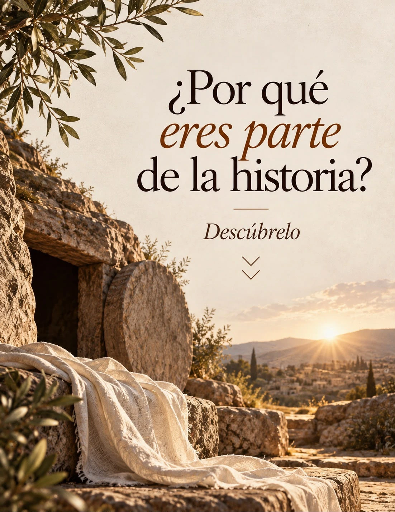
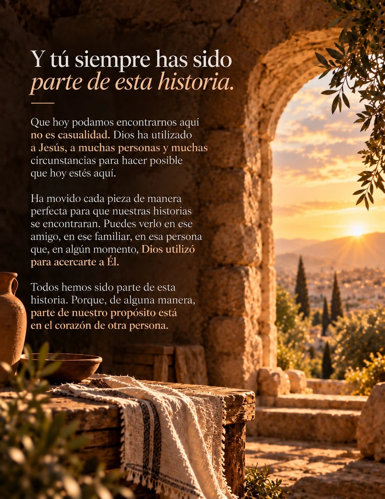

Una experiencia para ti
y ameniza el momento.
Toca para comenzar


Baja a tu ritmo
Gracias por compartir este momento
Si quieres seguir cerca, encontrarnos o compartir tu experiencia, aquí nos tienes.
Amistad Cristiana · Mérida-Poniente